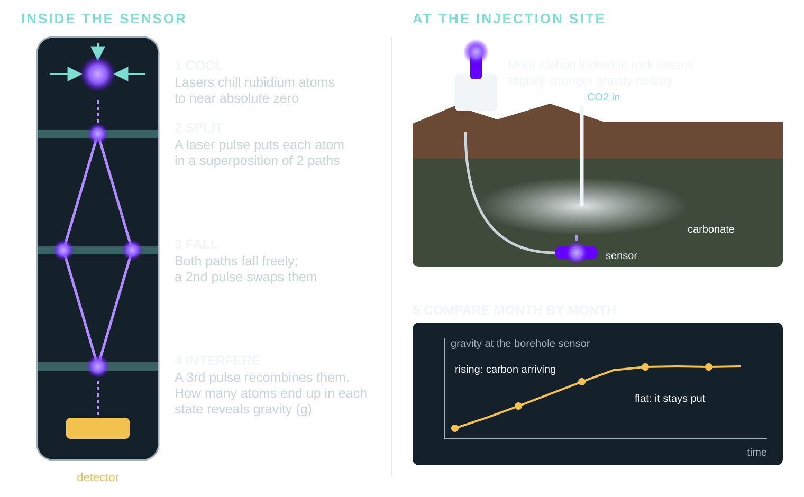
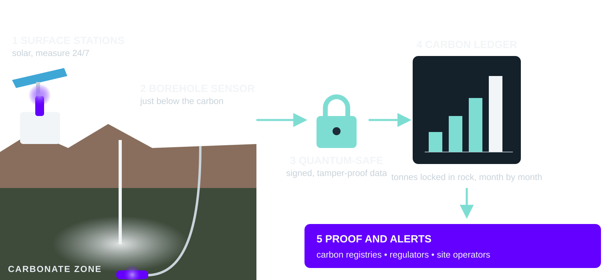

Weighing carbon with falling atoms
Every tonne of CO2 that becomes rock adds mass underground, and extra mass pulls a little harder. A quantum gravimeter can feel that tiny change.
How an atom interferometer works
Why mass changes gravity
Everything with mass pulls on everything else. A mountain pulls on you very slightly, and so does the carbon being added to the rock beneath it. For a compact lump of mass M at a distance r, the extra pull is:
G is the gravitational constant (6.674 × 10⁻¹¹). Gravity on Earth is about 9.8 m/s², or 980 million µGal. One year of injection at one Fujairah borehole, 25,000 tonnes of CO2, would add about 17 µGal at a sensor 100 m away: less than two hundred-millionths of normal gravity.
Field quantum gravimeters today can resolve about 5 µGal per measurement, so that signal is around three times their limit.

The Q-MIZAN network

Atom-interferometry gravimeter
Laser-cooled rubidium atoms in superposition give absolute gravity readings that do not drift. Used at solar-powered surface stations running 24/7.
Slim borehole quantum sensor
Gravity fades with distance squared, so a sensor in a curved borehole beneath the carbon sees far more than one on a mountain top. Shrinking the sensor to fit is our main design challenge.
Quantum-safe data
Readings are signed with post-quantum (quantum-safe) codes, so they cannot be faked even by future quantum computers. Quantum key distribution (QKD) is a future upgrade.
Rise, then flat
While CO2 is being injected, gravity at the borehole sensor rises month by month. When injection stops, gravity should stay level: the carbon has stopped moving. If gravity starts to fall, some of the mass is moving away, and the team checks the monitoring wells.
Gravity tells us where the mass is and whether it moves. Water chemistry from the wells confirms it has become carbonate. Used together, they give a complete answer.
See it in the simulation